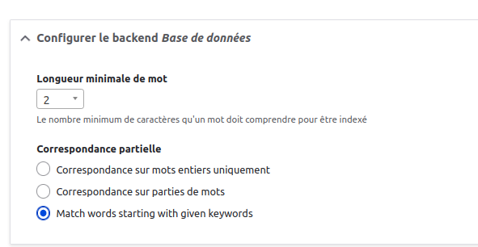
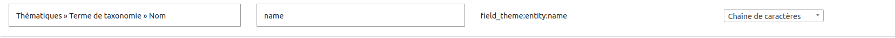
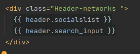
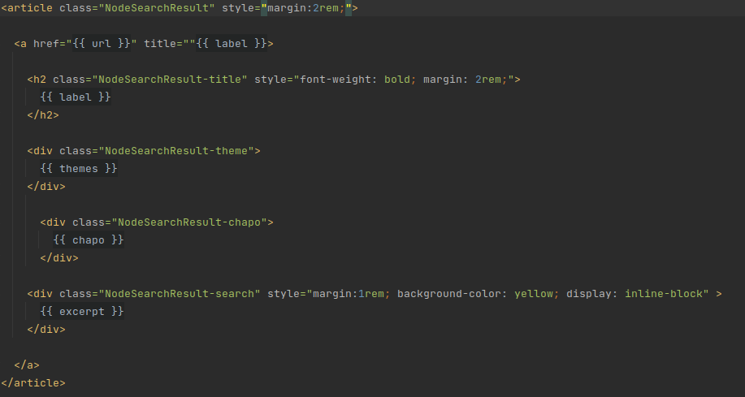
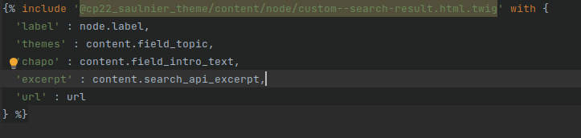
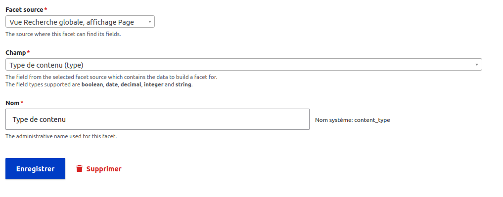
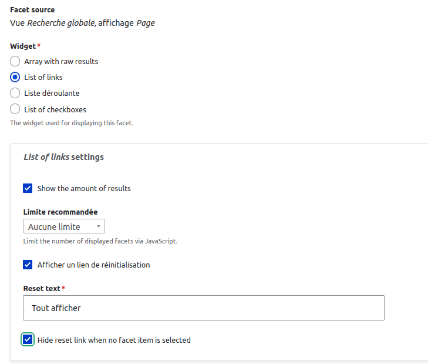
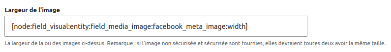
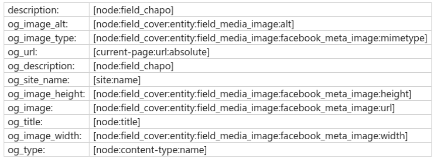
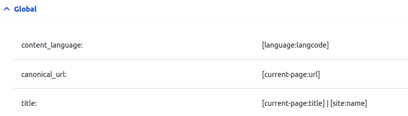

L'utilité des meta
outil de test de google pour les metatags et schemasElles sont indispensables dans le référencement
Par exemple lorsque l'on met un lien sur facebook ou autre réseau social, les éléments qui apparaissent sont des métatags
Elles sont indispensables dans le référencement
Par exemple lorsque l'on met un lien sur facebook ou autre réseau social, les éléments qui apparaissent sont des métatags
admin/config/search/metatag
A cet endroit on définit des éléments par défaut. On peut agrémenter différemment pour chaque élément du site
On peut ajouter un champ metatag pour un contenu particulier. Puis on peut aller definir ces meta en modifiant ou créant le contenu (description, titre...)
systeme qui se base sur les tokens
Editer les meta pour les contenus
admin/config/search/metatag/add
Dans cette page de configuration on peut configurer toutes les metadonnées. On peut de même utiliser les jetons pour faciliter et simplifier les informations que l'on met
[node:field_media:entity:field_media_image:facebook_meta_image:url]
Lorsque l'on ajoute des meta sur un type de contenu, sur la page de configuration on voit appraitre le type de contenu avec ce qu'il continet
C'est bien de les mettre en place pour augmenter la qualité de son site internet
Ces données structurées permettent à google de retrouver les informations à retransmettre au visiteur de son site
Ces structures de données sont dirigées par schema.org
schema.org
Pour le projet final on fait un peu de metatags: facebook, twitter et description minimum.
Voir creer un style d'image qui servira pour les description google et autres
Pour l'image
[node:field_media:entity:field_media_image:facebook_meta_image:url]
Pour l'image fb
[node:field_media:entity:field_media_image:facebook_meta_image:width]
[node:field_media:entity:field_media_image:facebook_meta_image:height]
Search api va crowler dans la base de donnée drupal. Il va rechercher sur l'index de recherche et transmettre les informations au front.
Search Api attachements qui peut etre ajouté à search Api permet d'ajouter la lecture de pdf par exemple
Installation de search_api et de search_api_db
On definit la database grace au module search_api_db puis on definit le nombre de mots (on peut laisser à 1 ou 2 caractères à partir duquel les mots sont indexés)
Correspondance avec le debut du mot
Datasources --> Contenu
Types(ce sont les bundles) --> tous sauf la page d'accueil
Configurer par default tracker --> indexer les plus récents en premier
Serveur --> database
Enregistrer et ajouter les champs
Des champs de contenu
Des champs dans le général
l'url(search api url)
le rendu html du contenu (rendered html output) --> on peut le booster
la langue
Chaine de caractere correspond à tous les mots inscrits dans la recherche seront en ET
Ex : titi tata toto --> chaine de caractère d'element recherche "titi tata toto"
Pour les terms de taxonomie on met chaine de caractère de manière à creer les facettes
Par ailleurs on peut mettre du texte integral ainsi que des chaines de caractères pour le même type d'éléments.
Ex: Pour le term de taxonomie on peut ajouter le nom de l'entité en chaine de caractère et en texte integral pour booster la recherche
A l'oppose texte integral aura un autre comportement, chaque mot sera dissocié
Pour les titres, chapo on doit les booster au max pour qu'ils soient bien referencés
entity status
filtre html
generateur de jetons
ignorer la casse
mots a exclure
surligner
transliteration
Creer une vue
creer les view mode pour chaque contenu
configurer la vue page
Critere de filtrage : Recherche texte integral (comme google)
Contient n'importe lequel de ces mots identifiant du filtre = le nom pour le retour de la recherche dans le codeCritere de tri : par defaut pertinence
Formulaire expose dans un bloc : yes (pour pouvoir le mettre dans un bloc
On place le bloc dans la region que l'on souhaite
On cree une twig que l'on veut implanter dans une autre twig avec les variables à afficher
On cree la vue dans laquelle on include le premier twig avec les valeurs pour les variables
Les includes seront chargés sur la page
Installation du module
contenu
thematique
Choisir la page a laquelle on veut ajouter les facets
 Configurer le facet settings
Faire la traduction de la facette
placer dans les blocs avec le search et limiter à l'affichage dans la page de recherche
Creer le style d'image à la dimension que l'on souhaite
Puis dans metatag
admin/config/search/metatag
Pour connaitre la liste des tokens admin/help/token
Choisir le contenu (par exemple) --> modifier
dfans open graph ajouter les tokens ue l'on souhaite pour l'image
On choisira le field_image du node
largeure
[node:field_visual:entity:field_media_image:facebook_meta_image:width]
hauteur
[node:field_visual:entity:field_media_image:facebook_meta_image:height]
alternatif text
[node:field_visual:entity:field_media_image:alt]
petit resumé des open graph config
config pour les news
config pour le global
